Last updated: 2019-06-18
Checks: 7 0
Knit directory: wflow-tidy-tuesday/
This reproducible R Markdown analysis was created with workflowr (version 1.4.0). The Checks tab describes the reproducibility checks that were applied when the results were created. The Past versions tab lists the development history.
Great! Since the R Markdown file has been committed to the Git repository, you know the exact version of the code that produced these results.
Great job! The global environment was empty. Objects defined in the global environment can affect the analysis in your R Markdown file in unknown ways. For reproduciblity it’s best to always run the code in an empty environment.
The command set.seed(20190611) was run prior to running the code in the R Markdown file. Setting a seed ensures that any results that rely on randomness, e.g. subsampling or permutations, are reproducible.
Great job! Recording the operating system, R version, and package versions is critical for reproducibility.
Nice! There were no cached chunks for this analysis, so you can be confident that you successfully produced the results during this run.
Great job! Using relative paths to the files within your workflowr project makes it easier to run your code on other machines.
Great! You are using Git for version control. Tracking code development and connecting the code version to the results is critical for reproducibility. The version displayed above was the version of the Git repository at the time these results were generated.
Note that you need to be careful to ensure that all relevant files for the analysis have been committed to Git prior to generating the results (you can use wflow_publish or wflow_git_commit). workflowr only checks the R Markdown file, but you know if there are other scripts or data files that it depends on. Below is the status of the Git repository when the results were generated:
Ignored files:
Ignored: .Rhistory
Ignored: .Rproj.user/
Note that any generated files, e.g. HTML, png, CSS, etc., are not included in this status report because it is ok for generated content to have uncommitted changes.
These are the previous versions of the R Markdown and HTML files. If you’ve configured a remote Git repository (see ?wflow_git_remote), click on the hyperlinks in the table below to view them.
| File | Version | Author | Date | Message |
|---|---|---|---|---|
| Rmd | d425335 | John Blischak | 2019-06-18 | Clean up pkg loading. |
| html | f04007f | John Blischak | 2019-06-18 | Build site. |
| Rmd | abd8dd4 | John Blischak | 2019-06-18 | Christmas bird counts |
library(entropy)
library(tidyverse)
library(cowplot)
theme_set(theme_cowplot())birds <- read_csv("data/bird_counts.csv")head(birds)# A tibble: 6 x 6
year species species_latin how_many_counted total_hours how_many_counte…
<dbl> <chr> <chr> <dbl> <dbl> <dbl>
1 1921 Americ… Botaurus len… 0 8 0
2 1921 Americ… Anas rubripes 0 8 0
3 1921 Americ… Fulica ameri… 0 8 0
4 1921 Americ… Corvus brach… 0 8 0
5 1921 Americ… Spinus trist… 0 8 0
6 1921 Americ… Falco sparve… 0 8 0str(birds)Classes 'spec_tbl_df', 'tbl_df', 'tbl' and 'data.frame': 18706 obs. of 6 variables:
$ year : num 1921 1921 1921 1921 1921 ...
$ species : chr "American Bittern" "American Black Duck" "American Coot" "American Crow" ...
$ species_latin : chr "Botaurus lentiginosus" "Anas rubripes" "Fulica americana" "Corvus brachyrhynchos" ...
$ how_many_counted : num 0 0 0 0 0 0 0 1 0 12 ...
$ total_hours : num 8 8 8 8 8 8 8 8 8 8 ...
$ how_many_counted_by_hour: num 0 0 0 0 0 0 0 0.125 0 1.5 ...
- attr(*, "spec")=
.. cols(
.. year = col_double(),
.. species = col_character(),
.. species_latin = col_character(),
.. how_many_counted = col_double(),
.. total_hours = col_double(),
.. how_many_counted_by_hour = col_double()
.. )head(birds$year)[1] 1921 1921 1921 1921 1921 1921summary(birds$year) Min. 1st Qu. Median Mean 3rd Qu. Max.
1921 1947 1970 1970 1994 2017 birds %>% count(year) %>%
ggplot(aes(x = year, y = n)) + geom_point()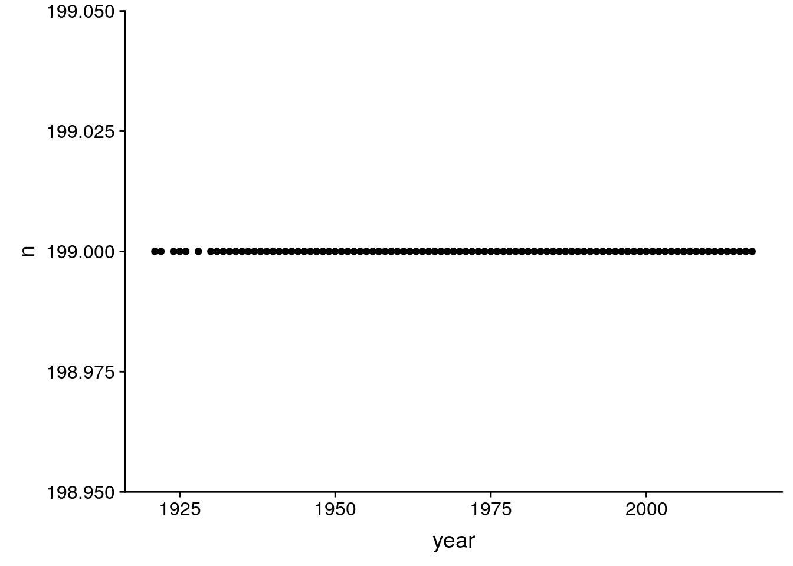
| Version | Author | Date |
|---|---|---|
| f04007f | John Blischak | 2019-06-18 |
stopifnot(table(birds$year) == 199)The species name in English and the scientific name
head(birds$species)[1] "American Bittern" "American Black Duck" "American Coot"
[4] "American Crow" "American Goldfinch" "American Kestrel" sum(is.na(birds$species))[1] 0birds %>% count(species) %>% select(n) %>% unique# A tibble: 1 x 1
n
<int>
1 94stopifnot(table(birds$species) == 94)The species name in latin
head(birds$species_latin)[1] "Botaurus lentiginosus" "Anas rubripes" "Fulica americana"
[4] "Corvus brachyrhynchos" "Spinus tristis" "Falco sparverius" sum(is.na(birds$species_latin))[1] 0birds %>% count(species_latin) %>% select(n) %>% unique# A tibble: 1 x 1
n
<int>
1 94stopifnot(table(birds$species_latin) == 94)Actual raw bird count observed
head(birds$how_many_counted)[1] 0 0 0 0 0 0summary(birds$how_many_counted) Min. 1st Qu. Median Mean 3rd Qu. Max.
0.0 0.0 0.0 193.5 5.0 73000.0 hist(birds$how_many_counted)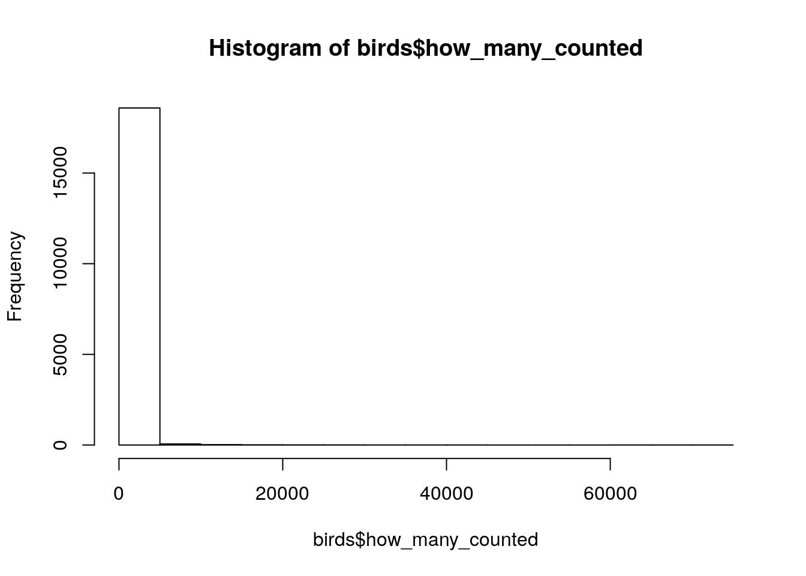
| Version | Author | Date |
|---|---|---|
| f04007f | John Blischak | 2019-06-18 |
birds %>% filter(how_many_counted > 50000)# A tibble: 8 x 6
year species species_latin how_many_counted total_hours how_many_counte…
<dbl> <chr> <chr> <dbl> <dbl> <dbl>
1 1979 Europe… Sturnus vulg… 65000 171 380.
2 1980 Europe… Sturnus vulg… 73000 186 392.
3 1981 Europe… Sturnus vulg… 65000 167 389.
4 1982 Europe… Sturnus vulg… 72000 164 439.
5 1983 Europe… Sturnus vulg… 70000 168 417.
6 1984 Europe… Sturnus vulg… 71000 178 399.
7 1990 Europe… Sturnus vulg… 66000 164 402.
8 1992 Europe… Sturnus vulg… 59600 167 357.Total hours spent observing
head(birds$total_hours)[1] 8 8 8 8 8 8summary(birds$total_hours) Min. 1st Qu. Median Mean 3rd Qu. Max. NA's
8.0 149.5 171.0 170.8 203.8 251.0 3781 hist(birds$total_hours)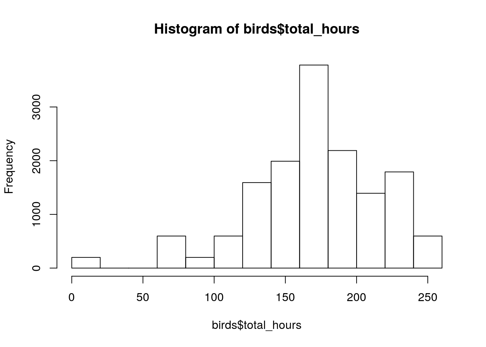
| Version | Author | Date |
|---|---|---|
| f04007f | John Blischak | 2019-06-18 |
# The missing data points are from the earlier years
table(is.na(birds$total_hours), birds$year)
1921 1922 1924 1925 1926 1928 1930 1931 1932 1933 1934 1935 1936
FALSE 199 0 0 0 0 0 0 0 0 0 0 0 0
TRUE 0 199 199 199 199 199 199 199 199 199 199 199 199
1937 1938 1939 1940 1941 1942 1943 1944 1945 1946 1947 1948 1949
FALSE 0 0 199 199 0 199 199 199 0 199 0 0 0
TRUE 199 199 0 0 199 0 0 0 199 0 199 199 199
1950 1951 1952 1953 1954 1955 1956 1957 1958 1959 1960 1961 1962
FALSE 199 199 199 199 199 199 199 199 199 199 199 199 199
TRUE 0 0 0 0 0 0 0 0 0 0 0 0 0
1963 1964 1965 1966 1967 1968 1969 1970 1971 1972 1973 1974 1975
FALSE 199 199 199 199 199 199 199 199 199 199 199 199 199
TRUE 0 0 0 0 0 0 0 0 0 0 0 0 0
1976 1977 1978 1979 1980 1981 1982 1983 1984 1985 1986 1987 1988
FALSE 199 199 199 199 199 199 199 199 199 199 199 199 199
TRUE 0 0 0 0 0 0 0 0 0 0 0 0 0
1989 1990 1991 1992 1993 1994 1995 1996 1997 1998 1999 2000 2001
FALSE 199 199 199 199 199 199 199 199 199 199 199 199 199
TRUE 0 0 0 0 0 0 0 0 0 0 0 0 0
2002 2003 2004 2005 2006 2007 2008 2009 2010 2011 2012 2013 2014
FALSE 199 199 199 199 199 199 199 199 199 199 199 199 199
TRUE 0 0 0 0 0 0 0 0 0 0 0 0 0
2015 2016 2017
FALSE 199 199 199
TRUE 0 0 0How many birds were counted divided by the number of person-hours that year
head(birds$how_many_counted_by_hour)[1] 0 0 0 0 0 0summary(birds$how_many_counted_by_hour) Min. 1st Qu. Median Mean 3rd Qu. Max. NA's
0.000 0.000 0.000 1.336 0.051 439.024 3781 hist(birds$how_many_counted_by_hour)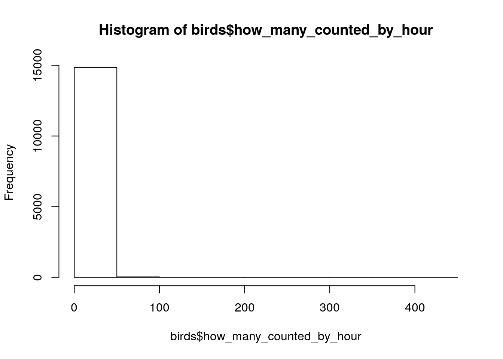
| Version | Author | Date |
|---|---|---|
| f04007f | John Blischak | 2019-06-18 |
birds %>% filter(!is.na(how_many_counted_by_hour),
how_many_counted_by_hour > 300)# A tibble: 8 x 6
year species species_latin how_many_counted total_hours how_many_counte…
<dbl> <chr> <chr> <dbl> <dbl> <dbl>
1 1979 Europe… Sturnus vulg… 65000 171 380.
2 1980 Europe… Sturnus vulg… 73000 186 392.
3 1981 Europe… Sturnus vulg… 65000 167 389.
4 1982 Europe… Sturnus vulg… 72000 164 439.
5 1983 Europe… Sturnus vulg… 70000 168 417.
6 1984 Europe… Sturnus vulg… 71000 178 399.
7 1990 Europe… Sturnus vulg… 66000 164 402.
8 1992 Europe… Sturnus vulg… 59600 167 357.stopifnot(is.na(birds$total_hours) == is.na(birds$how_many_counted_by_hour))Is there a relationship between the number of birds counted and the total number of person hours?
ggplot(birds, aes(x = total_hours, y = how_many_counted)) +
geom_point()Warning: Removed 3781 rows containing missing values (geom_point).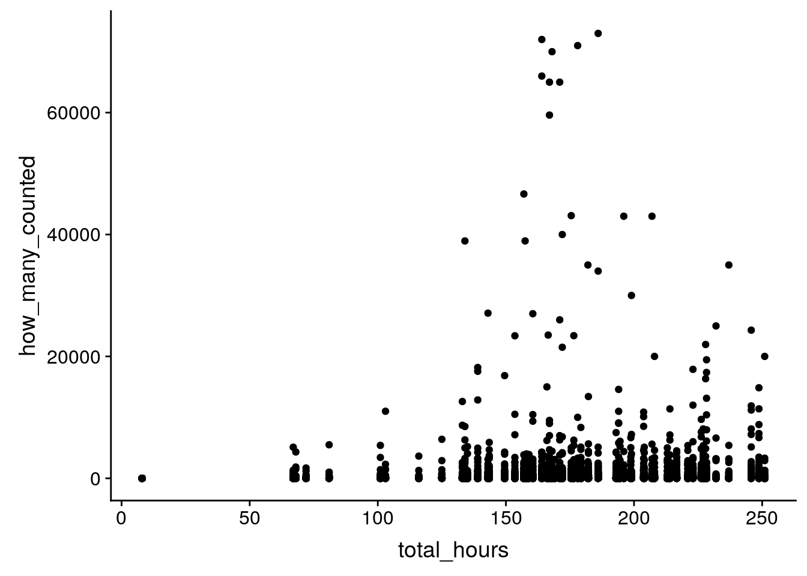
| Version | Author | Date |
|---|---|---|
| f04007f | John Blischak | 2019-06-18 |
How many hours per year?
birds %>%
group_by(year) %>%
summarize(total_hours = unique(total_hours)) %>%
ggplot(aes(x = year, y = total_hours)) +
geom_point()Warning: Removed 19 rows containing missing values (geom_point).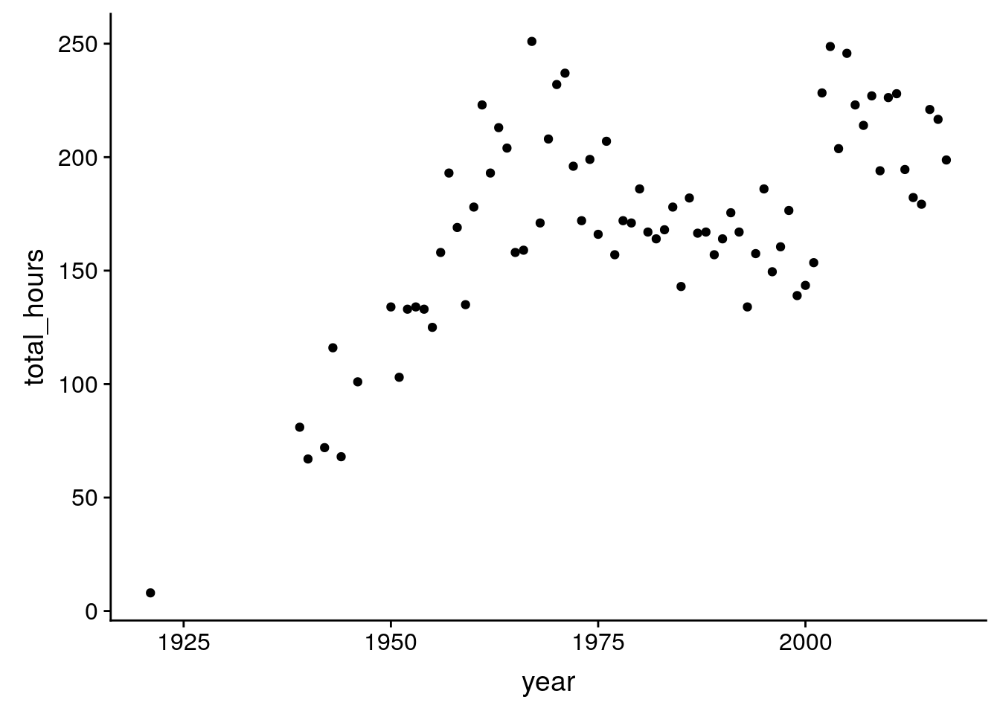
| Version | Author | Date |
|---|---|---|
| f04007f | John Blischak | 2019-06-18 |
What about the number of distinct species per year?
birds %>%
group_by(year) %>%
summarize(n_species = sum(how_many_counted > 0)) %>%
ggplot(aes(x = year, y = n_species)) +
geom_point()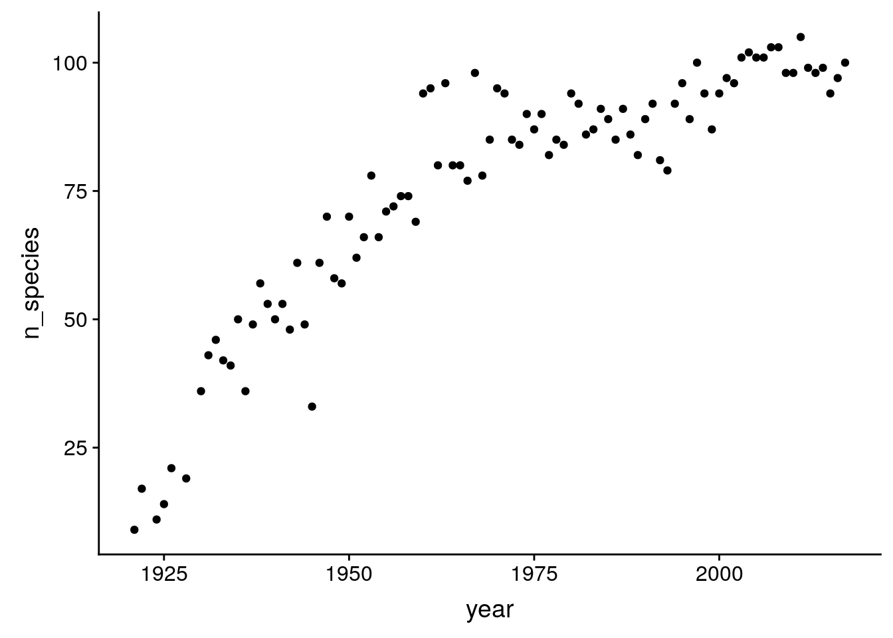
| Version | Author | Date |
|---|---|---|
| f04007f | John Blischak | 2019-06-18 |
Is there a relationship between the number of distinct species counted and the total number of person hours?
birds %>%
group_by(year) %>%
summarize(n_species = sum(how_many_counted > 0),
total_hours = unique(total_hours)) %>%
ggplot(aes(x = total_hours, y = n_species)) +
geom_point()Warning: Removed 19 rows containing missing values (geom_point).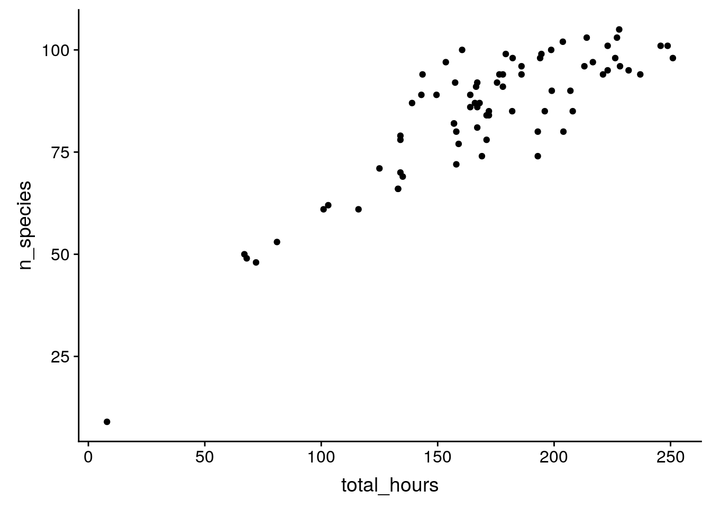
| Version | Author | Date |
|---|---|---|
| f04007f | John Blischak | 2019-06-18 |
birds %>% na.omit() %>%
mutate(concordance = how_many_counted / total_hours == how_many_counted_by_hour) %>%
select(concordance) %>%
summarize(matched = sum(concordance), n = n())# A tibble: 1 x 2
matched n
<int> <int>
1 14925 14925How many years has each species been observed?
birds %>%
group_by(species) %>%
summarize(n_years = sum(how_many_counted > 0)) %>%
ggplot(aes(x = n_years)) +
geom_histogram()`stat_bin()` using `bins = 30`. Pick better value with `binwidth`.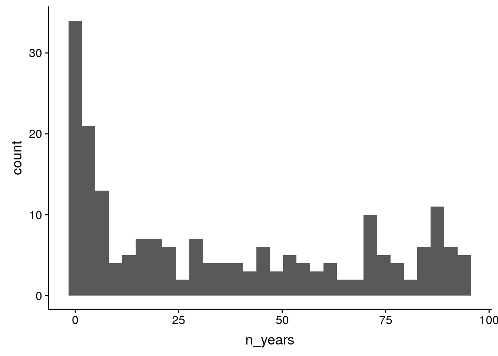
| Version | Author | Date |
|---|---|---|
| f04007f | John Blischak | 2019-06-18 |
starling <- birds %>%
filter(species == "European Starling")
ggplot(starling, aes(x = year, y = how_many_counted)) + geom_line()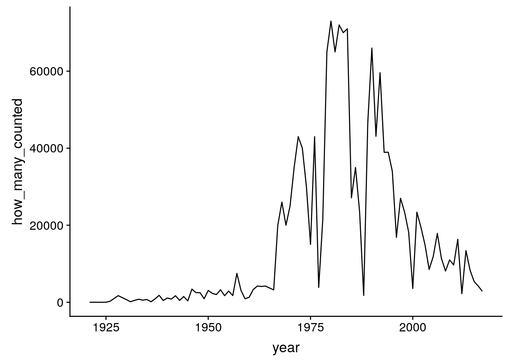
| Version | Author | Date |
|---|---|---|
| f04007f | John Blischak | 2019-06-18 |
ggplot(starling, aes(x = year, y = how_many_counted_by_hour)) + geom_line()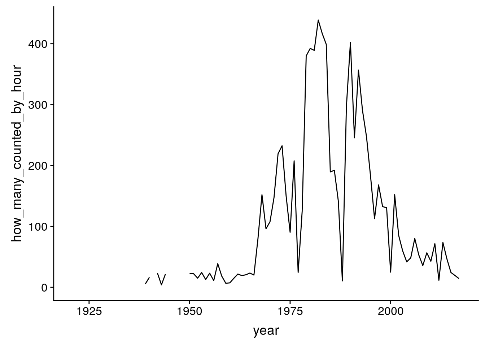
| Version | Author | Date |
|---|---|---|
| f04007f | John Blischak | 2019-06-18 |
b <- birds %>%
na.omit() %>%
filter(year >= 1939) %>%
mutate(observed = how_many_counted > 0,
genus = str_split_fixed(species_latin, " ", 2)[, 1]) %>%
select(year, species, species_latin, genus, observed, how_many_counted_by_hour)
head(b)# A tibble: 6 x 6
year species species_latin genus observed how_many_counted_b…
<dbl> <chr> <chr> <chr> <lgl> <dbl>
1 1939 American Bit… Botaurus lentigi… Botau… FALSE 0
2 1939 American Bla… Anas rubripes Anas TRUE 2.98
3 1939 American Coot Fulica americana Fulica FALSE 0
4 1939 American Crow Corvus brachyrhy… Corvus FALSE 0
5 1939 American Gol… Spinus tristis Spinus FALSE 0
6 1939 American Kes… Falco sparverius Falco TRUE 0.0370By species
p_entropy_species <- birds %>%
group_by(year) %>%
summarize(entropy = entropy(how_many_counted)) %>%
ggplot(aes(x = year, y = entropy)) + geom_line() +
labs(x = "Year", y = "Shannon diversity",
title = "Species diversity per year")
p_entropy_species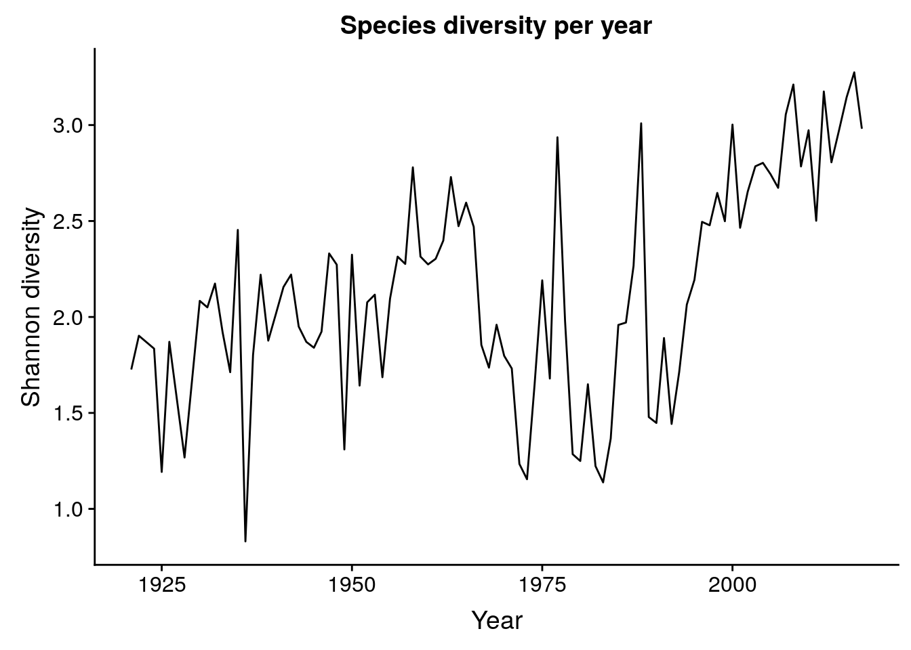
| Version | Author | Date |
|---|---|---|
| f04007f | John Blischak | 2019-06-18 |
By genus
length(unique(birds$species_latin))[1] 199length(unique(str_split_fixed(birds$species_latin, " ", 2)[, 1]))[1] 127p_entropy_genus <- birds %>%
mutate(genus = str_split_fixed(species_latin, " ", 2)[, 1]) %>%
group_by(year, genus) %>%
summarize(n_genus = sum(how_many_counted)) %>%
ungroup() %>%
group_by(year) %>%
summarize(entropy = entropy(n_genus)) %>%
ggplot(aes(x = year, y = entropy)) + geom_line() +
labs(x = "Year", y = "Shannon diversity",
title = "Genus diversity per year")
p_entropy_genus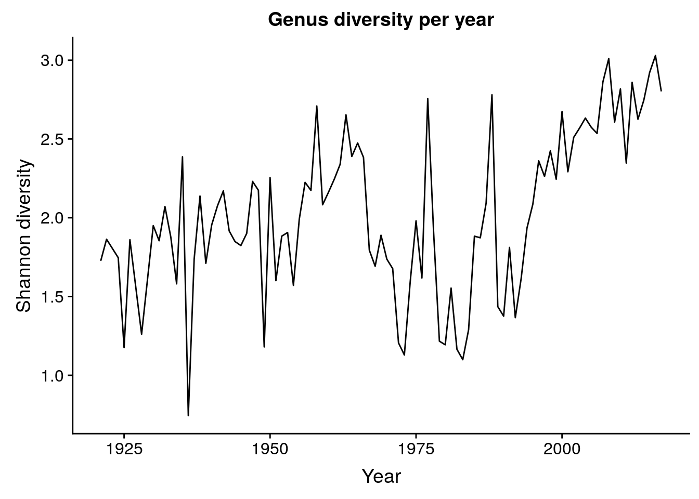
| Version | Author | Date |
|---|---|---|
| f04007f | John Blischak | 2019-06-18 |
plot_grid(p_entropy_species + ylim(0.5, 3.5),
p_entropy_genus + ylim(0.5, 3.5))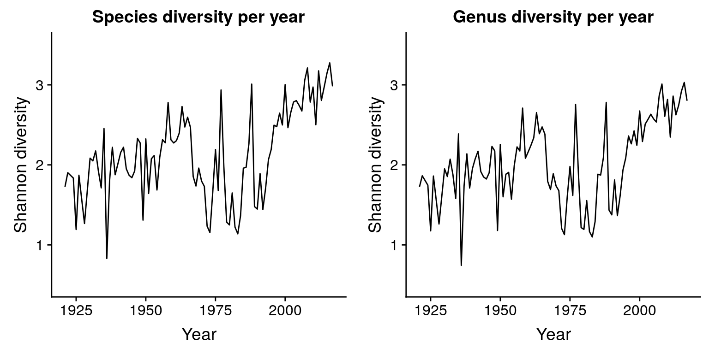
| Version | Author | Date |
|---|---|---|
| f04007f | John Blischak | 2019-06-18 |
sessionInfo()R version 3.6.0 (2019-04-26)
Platform: x86_64-pc-linux-gnu (64-bit)
Running under: Ubuntu 18.04.2 LTS
Matrix products: default
BLAS: /usr/lib/x86_64-linux-gnu/atlas/libblas.so.3.10.3
LAPACK: /usr/lib/x86_64-linux-gnu/atlas/liblapack.so.3.10.3
locale:
[1] LC_CTYPE=en_US.UTF-8 LC_NUMERIC=C
[3] LC_TIME=en_US.UTF-8 LC_COLLATE=en_US.UTF-8
[5] LC_MONETARY=en_US.UTF-8 LC_MESSAGES=en_US.UTF-8
[7] LC_PAPER=en_US.UTF-8 LC_NAME=C
[9] LC_ADDRESS=C LC_TELEPHONE=C
[11] LC_MEASUREMENT=en_US.UTF-8 LC_IDENTIFICATION=C
attached base packages:
[1] stats graphics grDevices utils datasets methods base
other attached packages:
[1] cowplot_0.9.4 forcats_0.4.0 stringr_1.4.0 dplyr_0.8.1
[5] purrr_0.3.2 readr_1.3.1 tidyr_0.8.3 tibble_2.1.3
[9] ggplot2_3.1.1 tidyverse_1.2.1 entropy_1.2.1
loaded via a namespace (and not attached):
[1] tidyselect_0.2.5 xfun_0.7 haven_2.1.0 lattice_0.20-38
[5] vctrs_0.1.0 colorspace_1.4-1 generics_0.0.2 htmltools_0.3.6
[9] yaml_2.2.0 utf8_1.1.4 rlang_0.3.4 pillar_1.4.1
[13] glue_1.3.1 withr_2.1.2 modelr_0.1.4 readxl_1.3.1
[17] plyr_1.8.4 munsell_0.5.0 gtable_0.3.0 workflowr_1.4.0
[21] cellranger_1.1.0 rvest_0.3.4 evaluate_0.14 labeling_0.3
[25] knitr_1.23 fansi_0.4.0 broom_0.5.2 Rcpp_1.0.1
[29] scales_1.0.0 backports_1.1.4 jsonlite_1.6 fs_1.3.1
[33] hms_0.4.2 digest_0.6.19 stringi_1.4.3 grid_3.6.0
[37] rprojroot_1.2 cli_1.1.0 tools_3.6.0 magrittr_1.5
[41] lazyeval_0.2.2 zeallot_0.1.0 crayon_1.3.4 whisker_0.3-2
[45] pkgconfig_2.0.2 xml2_1.2.0 lubridate_1.7.4 assertthat_0.2.1
[49] rmarkdown_1.13.4 httr_1.4.0 rstudioapi_0.10 R6_2.4.0
[53] nlme_3.1-140 git2r_0.25.2 compiler_3.6.0